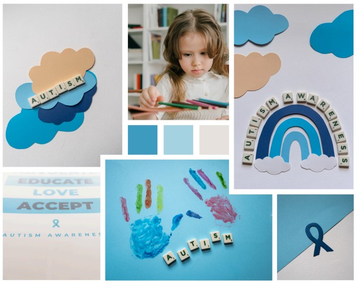
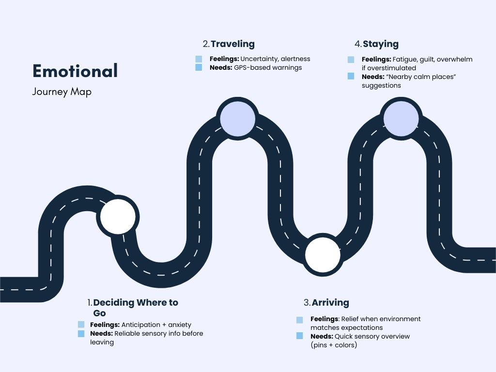
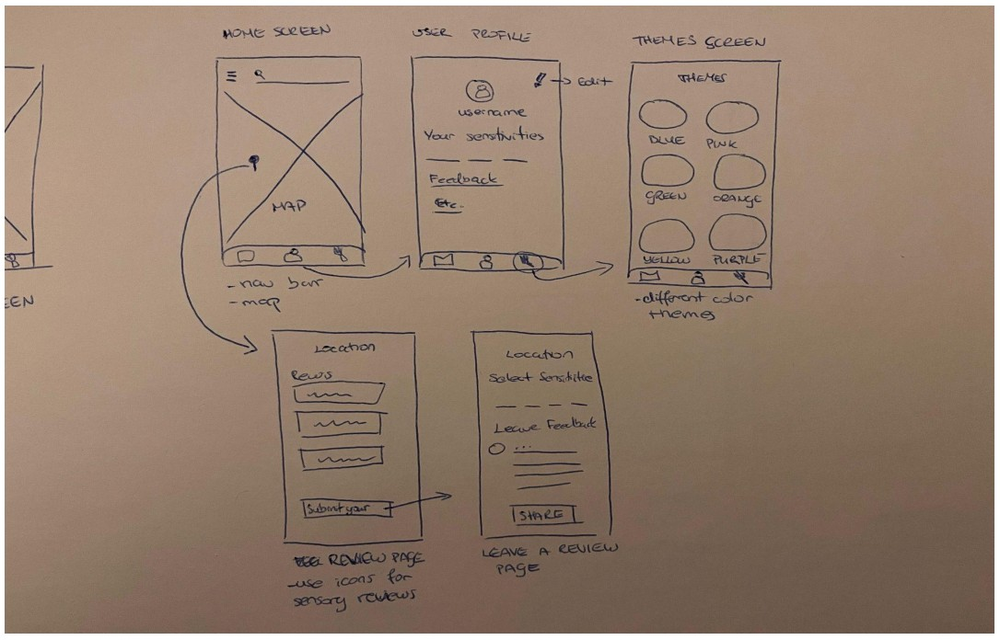
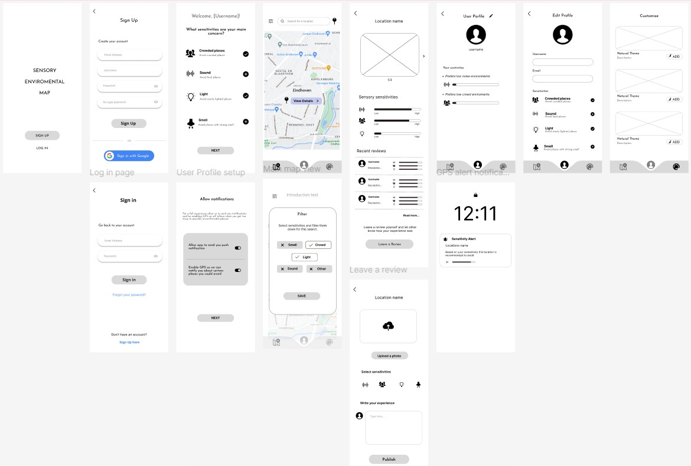
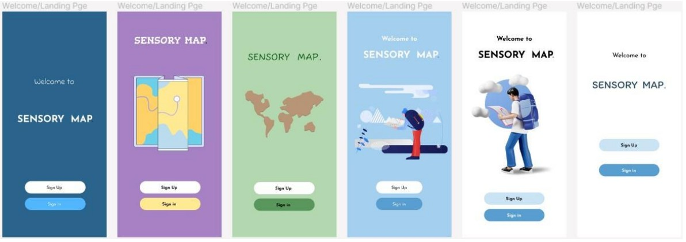
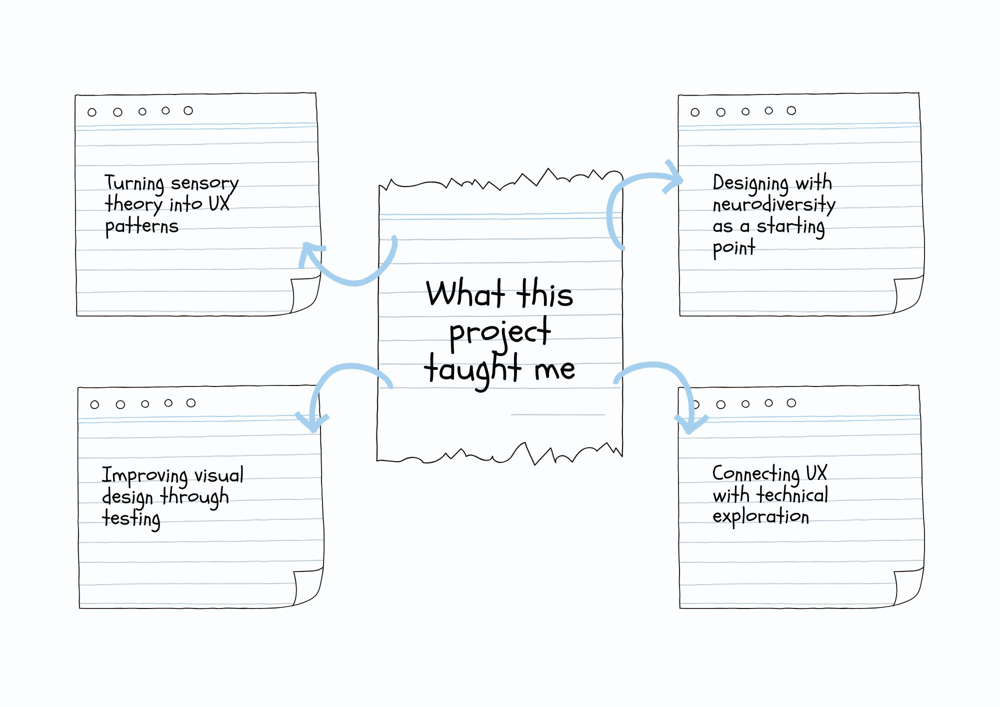

A mobile app concept that helps autistic and sensory-sensitive adults discover calmer, more predictable public spaces using crowd-sourced sensory data.

Academic / Personal Project
UX Researcher · UI Designer
Approx. 20 weeks
Figma · Miro · React · Map APIs
Accessibility · Neurodiversity · Map UX
The Sensory Map App is based on one simple question: “What if navigation apps didn’t just tell you where to go, but how a place might feel?”
Through research into autism and sensory processing, I discovered that many autistic adults struggle not only with finding locations, but with unpredictable noise, light, and crowds. Existing tools like Google Maps focus on distance and ratings, but not on whether a space feels overwhelming or comfortable.
This project explores an app that combines GPS-enabled alerts, user-generated sensory reviews, and map filters so users can avoid overwhelming spaces – or intentionally choose to challenge themselves on their own terms.

I first explored the daily challenges of autistic adults: social overload, sensory sensitivities, emotional regulation, and navigating public spaces. Literature on Autism Spectrum Disorder highlighted that environments with intense noise, lighting, and crowd density can cause sensory overload and avoidance of everyday situations.
In an early research document, I mapped existing IT solutions for autistic people (communication apps, emotional regulation tools, learning platforms, etc.) and identified a gap: there was no tool focused specifically on navigating sensory-friendly environments. From this, the concept of a Sensory Environment Map emerged – a map that shows how a place might feel based on user experiences and external data.
I then explored how map-based apps work technically and what kind of data I could realistically surface: crowd density, popular times, reviews, and real-time environmental data. I researched how to integrate data from services like Google Maps and city open data into custom map layers with color-coded pins for noise, light, and crowd levels.
This led to the core UX concept:
In parallel, I researched design guidelines for autistic users: muted color palettes, high contrast, predictable layouts, minimal animation, clear iconography, and reduced text. These principles later shaped every interface decision – from color choices to how many elements appear on each screen.

Using insights from research and conversations with autistic students, I created personas that focused on sensory needs, routines, and coping strategies rather than demographics. For example:

I consulted an autism professional who reinforced that customization and predictability are crucial. They emphasized:
They also raised future considerations like how to deal with “fake” reviews and how to respond if someone has stayed too long in a “red” zone and becomes overstimulated.
Through feedback and reflection, I mapped emotional states across a typical journey: deciding where to go, traveling there, arriving, and staying. Key feelings included anticipation, anxiety about unknown environments, relief when things feel safe, and guilt or exhaustion after overstimulation. These emotional insights informed features like personalized filters, calm visuals, and non-judgmental wording in the app.

During ideation, I translated research insights into concrete app features. The main ideas were:
I mapped the main user flow from onboarding to daily use: sign up → set sensory sensitivities → allow GPS & notifications → land on main map → filter and explore → view location details → read or leave reviews → adjust profile and theme. The flow was intentionally linear with minimal branches to keep it predictable and low-stress.

Low-fidelity sketches and wireframes focused on keeping screens clean, with one main action per screen and large, recognizable icons instead of dense text.


I went through several visual iterations: a bold purple version, a green nature-inspired version, deep blue layouts, and finally a light blue interface. User and expert feedback showed that:

The final light-blue system balanced calmness, readability, and autism-related color associations, supported by research on muted blue tones for reduced stimulation.

The final UI followed principles such as:
To understand how this concept could work as a real product, I researched how to integrate map APIs (like Google Maps) with custom data layers showing sensory information. I documented how to pull place details, crowd levels, and reviews into the app, and how to overlay custom pins and filters on top of a base map.
Based on this, I built a React prototype that simulates the main map flow: users can see color-coded pins, open location detail cards, and interact with basic filters and themes. This helped validate that the interaction model and information architecture work in a more realistic environment beyond static Figma screens.
I created a testing plan and ran usability sessions with autistic students using observational testing, a think-aloud protocol, and post-session interviews. Participants were asked to:
An autism expert also reviewed the concept and design, focusing on customization, map clarity, and the long-term value of the tool.
Overall, testing confirmed that the concept is meaningful for autistic users and that the combination of map, filters, and customization feels supportive rather than overwhelming. :contentReference[oaicite:11]{index=11}

The Sensory Map App project taught me how to move from a broad question about autism and IT solutions to a focused, research-based concept supported by real users and experts. I learned how to:
This project reflects my interest in inclusive, research-driven design and how digital products can support people in very real, everyday situations – starting with something as simple as choosing where to go.
